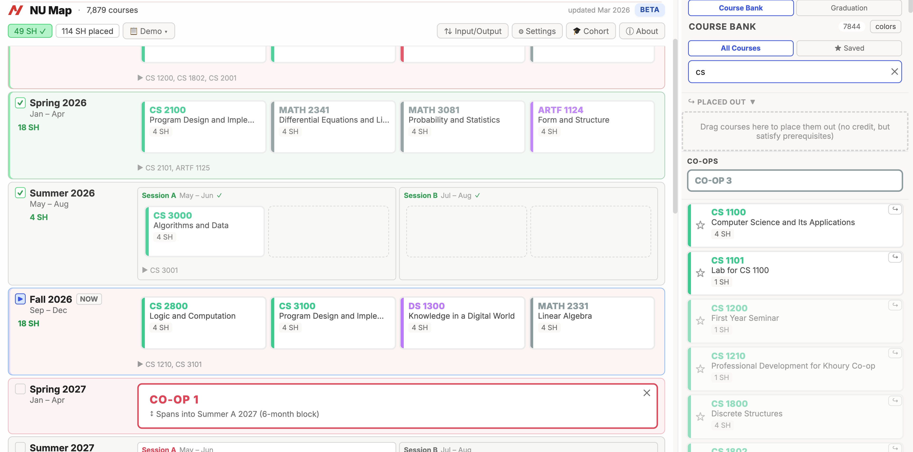
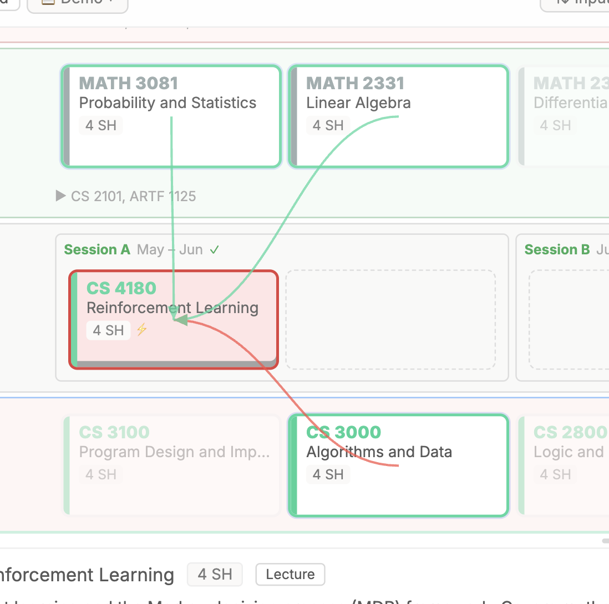
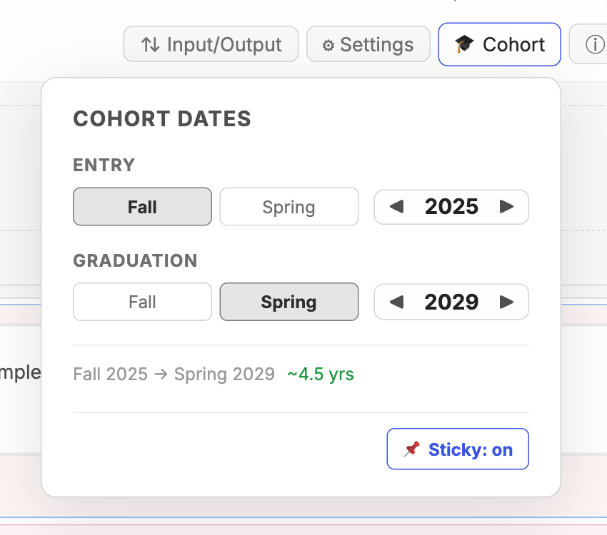
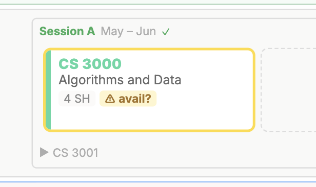
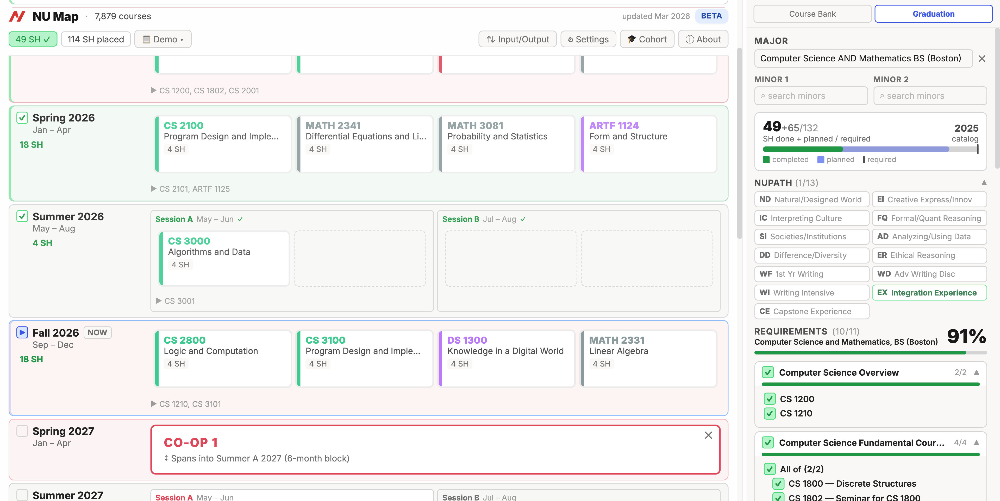
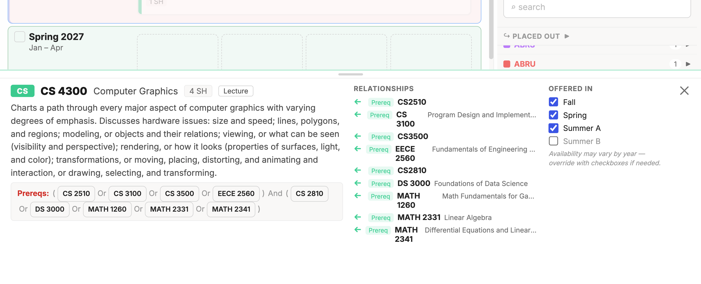
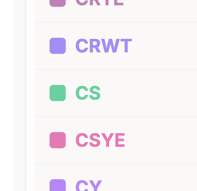
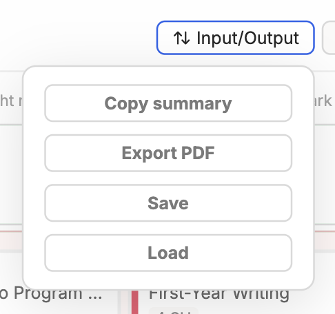
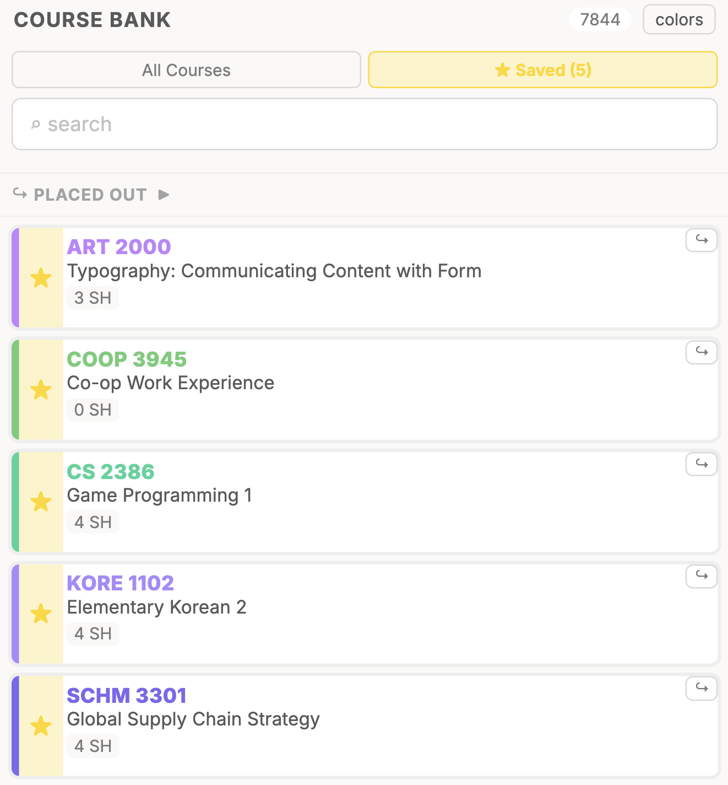
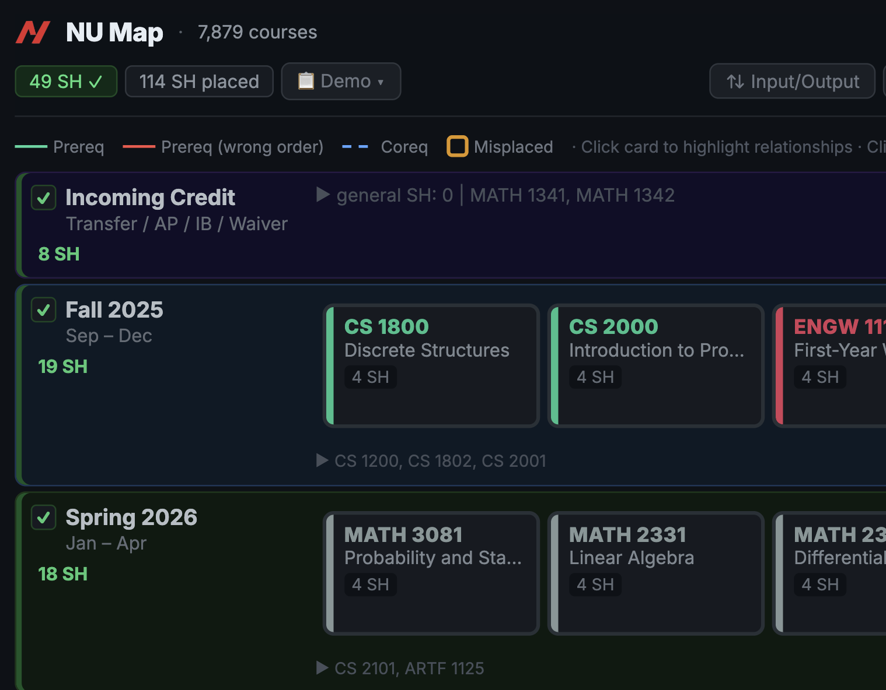

A course planning tool built to complement Northeastern's degree audit. This page outlines the features it explores and where institutional support could take them further.
Try the working prototype →
The current degree audit is effective at tracking graduation requirements. This project explores how some of its existing information - like prerequisite chains, semester offerings, and course descriptions — could be surfaced more visually and made easier to work with during planning.
Clicking a course draws SVG arrows to its direct prerequisites and dependents. When a prerequisite is placed in the wrong order, a red arrow marks the conflict. When a prerequisite isn't placed at all, a separate warning appears.

Corequisites are automatically dragged and dropped together, with an SVG line showing their relationship. If they end up in different semesters, a warning appears.
Plans begin from your entry semester, not just the current one. Completed courses sit alongside planned ones, giving a complete view. Entry and graduation semesters can be adjusted without starting a new plan.

Flags courses that likely aren't offered in a given semester. The alert can be overridden if the student has better information.


The course planner takes the majority of the screen. The course bank and graduation panel are accessible in side panels. Each semester shows courses with 3 or more credits in a row, with smaller credits tucked below to keep things scannable.

Each course has an information panel showing its description, prerequisite chains, and semester offering data. All accessible in place without leaving the planner.
Courses move between the course bank and planner by dragging. Undo and redo are mapped to standard keyboard shortcuts, so experimenting with different arrangements is quick.
Courses are colored by department code, making it easier to scan the distribution of subjects across semesters at a glance.

Plans can be saved and loaded as JSON files. A formatted PDF can be generated for advisor meetings or personal records. A structured text summary can also be generated for use with a chatbot or AI advisor.

Students can bookmark courses they're considering without placing them into a semester, useful for narrowing down electives or keeping track of options.

Full theme support across the interface.

All data stays on the student's device, which keeps things fast and private. The tradeoff is that plans don't sync across devices. A hybrid approach — local-first with optional cloud backup — could give students the best of both.
Students with IB credits, AP credits, transfer credits, or other unusual situations can account for them without workarounds.
Students can change their cohort to see how their plan maps to different requirement sets without starting over.
Courses a student has placed out of can be marked so they're reflected in the plan and progress tracking.
These are the areas where continued development — and institutional support — would have the most impact.
Feedback is welcome!
Best reached by email at gu.nat@northeastern.edu